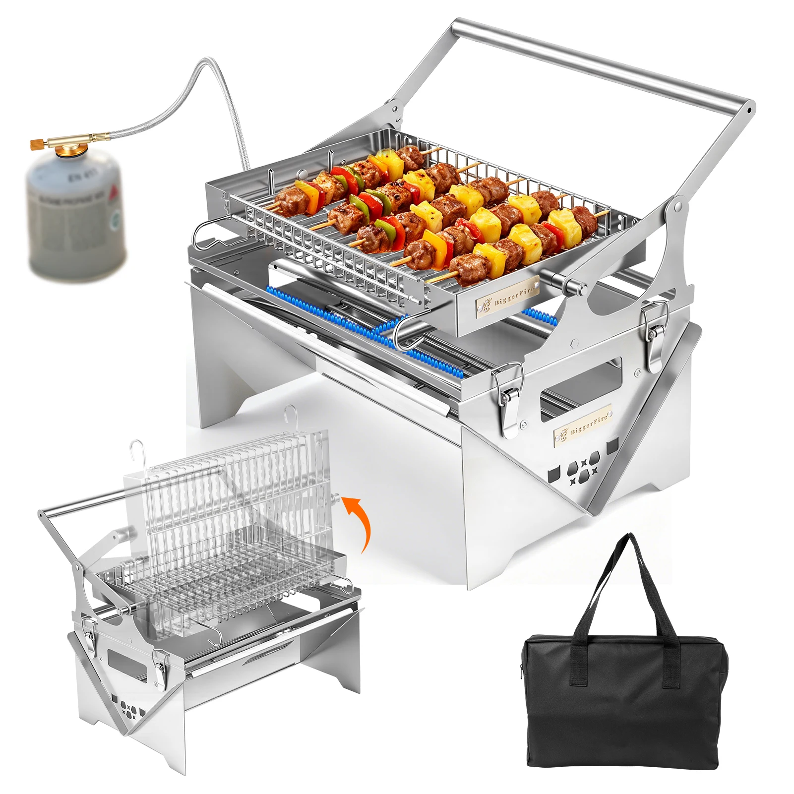
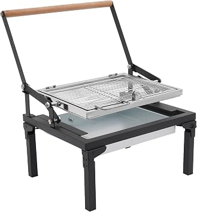
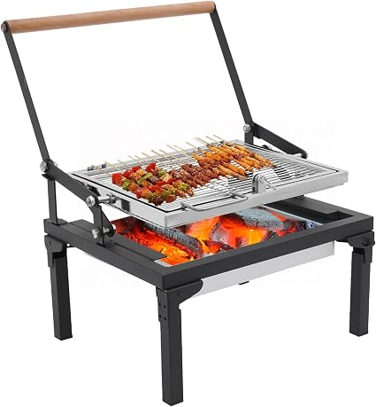
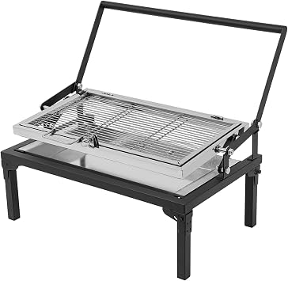
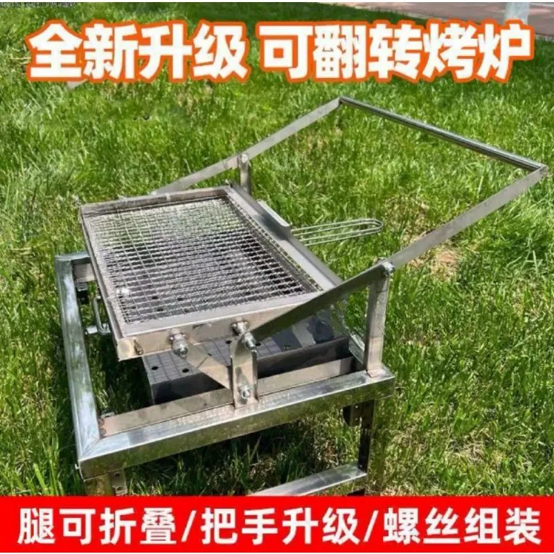
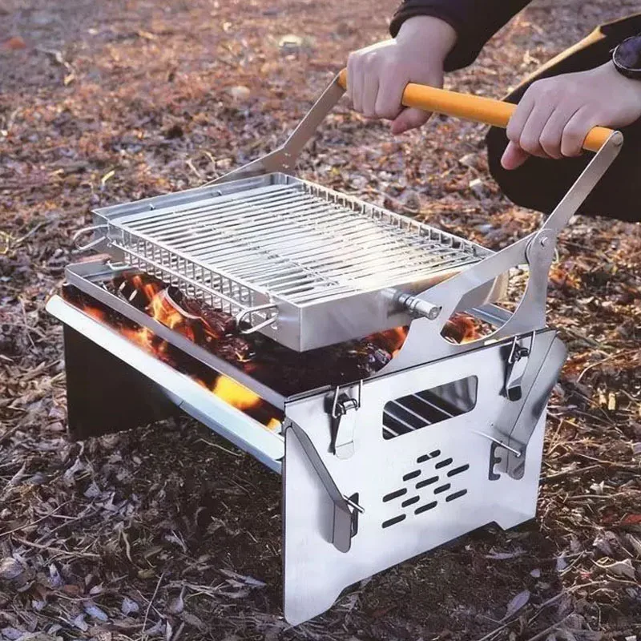
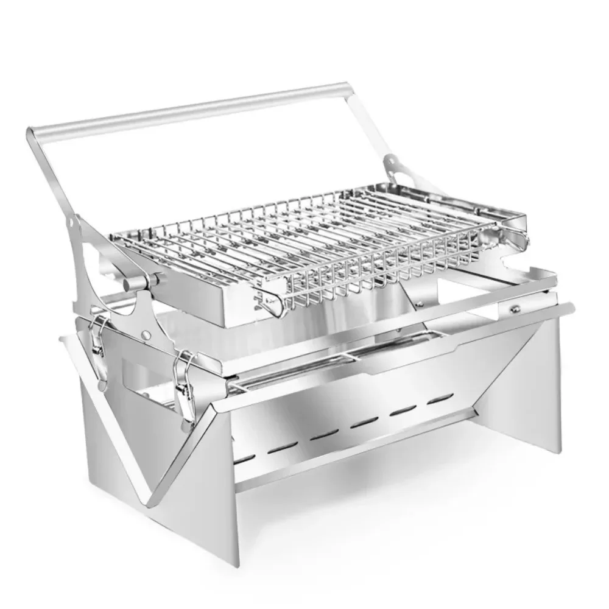
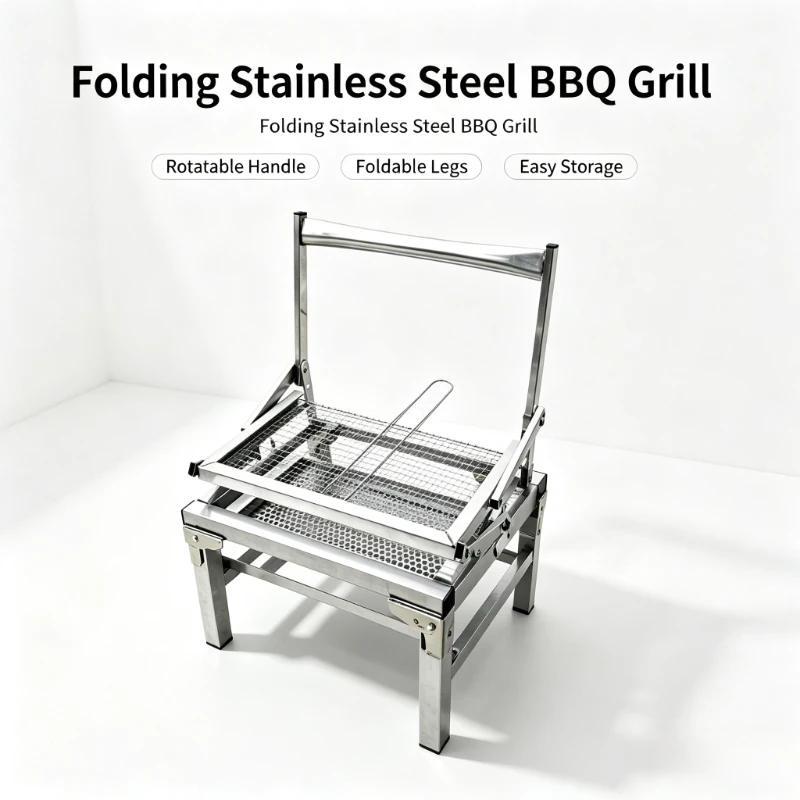
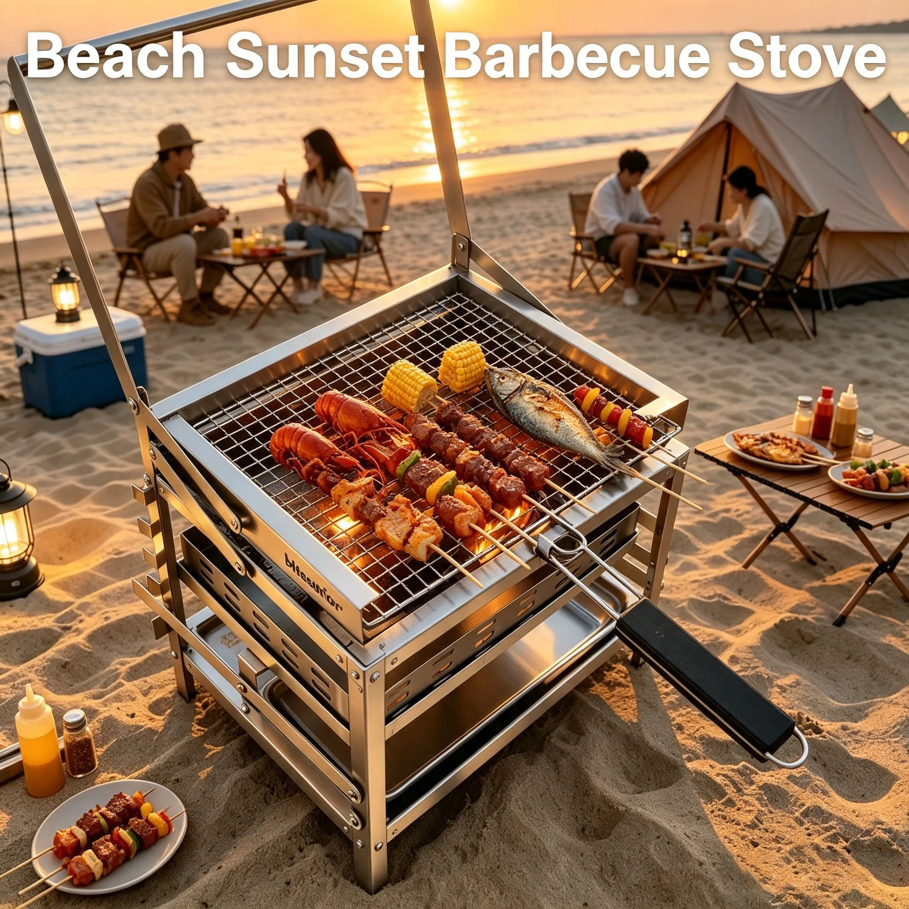
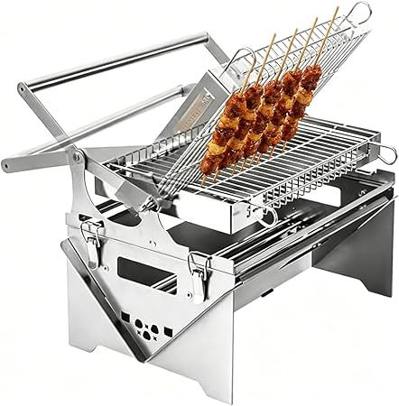

Najważniejsza obserwacja: przy AliExpress koszt wysyłki do Szwecji (900–1900 kr) dominuje cenę — produkt to często <20% totalu. Dlatego realną cenę porównujemy dopiero po dodaniu przesyłki.
| Zdjęcie | Produkt | Platforma | Cena | Wysyłka | Total | Sprzedaż / ocena | Uwagi |
|---|---|---|---|---|---|---|---|
brak zdjęcia (Temu JS) |
Grillset med roterande rostfritt stål (flip-up kolbehållare) | Temu | 628,11 kr | — (lokal-EU) | 628,11 kr | 68 sold / – | ⚠️ mechanizm do weryfikacji |
 |
Dual Fuel Gas&Charcoal One-Button Flip SUS304 | AliExpress | 970,26 kr | FREE | 970,26 kr | 44 sold / 5,0★ | 🏆 best value dual-fuel (gaz+węgiel) |
 |
Portable Rotatable SS Charcoal Grill 360° Swivel Folding Basket | Amazon.se | 1 011,19 kr | FREE | 1 011,19 kr | – / 4,5★ | stal nierdzewna, torba w zestawie |
 |
Foldable Charcoal Grill 360° Rotating Grate | Amazon.de | 667,56 kr | 389,58 kr | ≈1 057 kr | – / 5,0★ | duży (148×38×35 cm), szuflada na węgiel |
 |
Portable Camping Grill Foldable, 360° Swivel Grill Grate | Amazon.se | 938,02 kr | 218 kr | ≈1 156 kr | – / 5,0★ | tylko 3 szt. na stanie |
brak zdjęcia (eBay) |
Portable Foldable 360° Flip Rotating SS Charcoal BBQ Grill | eBay.de | 85,15 € | 19,63 € | ≈1 180 kr | – / – | najbliżej F1 sprzedawca z Chin (austmintz) |
 |
Portable Folding Flip Rotating BBQ Grill (fish roaster) | AliExpress | 161,12 kr | 1 110,23 kr | 1 271,35 kr | 1 sold / – | tania podstawa, brutalna wysyłka |
 |
Flip Style 2-in-1 Double Side 180° Flip Grill Grate | AliExpress | 403,94 kr | 939,35 kr | 1 343,29 kr | 8 sold / – | najczystszy styl F1 z tanich |
 |
Barbecue Grill Camping Flip Device 360° stainless folding | AliExpress | 1 320,33 kr | 1 281,77 kr | 2 602,10 kr | 7 sold / 5,0★ | 360° flip, ale total droższy niż referencja |
 |
Stainless Steel Flip Barbecue Grill, Foldable, rotating | AliExpress | 836,91 kr | 1 338,08 kr | 2 174,99 kr | 9 sold / 5,0★ (3) | ~3,25 kg, recenzje 5,0★ |
 |
REF: F1 Outdoor BBQ Grill (produkt z reel’a) | AliExpress | 1 334,11 kr | 1 110,23 kr | 2 444,34 kr | 6 sold / 5,0★ | punkt odniesienia |
blazefor.com |
Blaze For F1 Adjustable Charcoal Rotating Grill (oficjalny sklep) | BlazeFor | $189,99 ≈ 2 000 kr | FREE (z Chin, 8–20 dni) | ≈2 000 kr | marketing / – | 3–4× drożej niż ten sam klon na eBay/Ali |
7/8 fraz przeszło („F1 grill barbecue” padło na punisz-blokadę). Wysyłkę odczytano z żywej strony PDP (item-detail HTTP jej nie zwraca). Kluczowy wniosek: wysyłka do SE = 900–1900 kr — dla referencyjnego F1 (1334 kr + 1110 wysyłki = 2444 kr) to potwierdzenie Twojego spostrzeżenia.
Pełna lista 13 pozycji z destylatu: memory/research/flip-grill-2026-10-24/raw/aliexpress.md. Do domknięcia: realna wysyłka po zalogowaniu i warianty SKU (wymaga sesji).
⚠️ Przeglądarka współdzielona (kontencja portu) — tab ginął, dane z 7 fraz. Zdjęcia Temu ładowane leniwie przez JS (nie udało się pobrać og:image — 3 metody: curl/lightpanda/r.jina.ai); w tabeli brak miniatur dla Temu.
| Produkt | Cena | Magazyn | Sprzedaż | Typ |
|---|---|---|---|---|
| Grillset med roterande rostfritt stål (flip-up kolbehållare) | 628,11 kr | Lokal EU | 68 | FLIP? weryfikować |
| VEVOR Kraftig Vridbar Campfire Grill 61cm | 651,65 kr | Lokal EU | – | FLIP wahliwa kratka 360° |
| 360-graders roterbar och hopfällbar (REF F1) | 1 338,95 kr | Lokal EU | 5,8K+ (sklep) | FLIP |
| Grillkorg / vändbar grillkorg (akcesorium) — najtańszy flip-kosz | 178,07 kr | – | – | KOSZYK |
Scrape przez Chrome (CDP). „F1 Outdoor BBQ Grill” / „BlazeFor F1” nie istnieje pod tą nazwą na Amazonie — najbliższy funkcjonalnie (klatka 180°) to B0H2HT3Y96 (2 552 kr, free ship). 10+ modeli typu 360°-rotating.

Najtańszy bliski odpowiednik F1 z dostawą do UE: „Portable Foldable 360° Flip Rotating Stainless Steel Charcoal BBQ Grill” — 85,15 € + 19,63 € ≈ 1 180 kr (sprzedawca austmintz, wysyłka z Chin). Droższe odpowiedniki z USA: 171–214 € + 100–143 € wysyłki. Tańsze „klapowane 360°” (84–86 € + 42 €) — ale inny mechanizm (nie full flip kratki). Listing eBay.de →
Oficjalny sklep: blazefor.com (Shopify, USD). F1 = „Blaze For F1 Adjustable Charcoal Rotating Grill” od $189,99 (≈2 000 kr), darmowa wysyłka z fabryki w Chinach (EU 8–20 dni rob., podatki po stronie sprzedawcy). Firma: HONGKONG HEZHONG TECHNOLOGY CO., Ltd. (Kwun Tong, HK). Brand = fabryczny/OEM (#wholesale #factory #OEM) — filmy w YT to instrukcje montażu, nie recenzje. Ten sam produkt na eBay.de/Ali wychodzi 2–3× taniej (dropship markup).
| Oferta | Cena/szt | MOQ |
|---|---|---|
| Flip Grill Steel Charcoal BBQ, height-adjustable tray (ZCG-7335-24) | 429,92 → 404,53 kr | 200 → 1000 |
| Portable Powder Coated Flip, rotatable grate (SHUNERTOOL) | 586,71 → 566,48 kr | 50 |
| Jiangsu Aurbrand — Outdoor Flipping BBQ 304 SS | 393–1 304 kr (per wariant) | różne |
| New Portable Easy Charcoal Flip Folding (kupowalne od 1 szt) | 1 123,13 kr / pc | 1 |
Floor: ~38–45 USD/szt przy MOQ 200–1000. Landed 1 szt. do SE ≈ 1 100–2 400 kr (estymacja frachtu — waga ~10 kg, gabaryt). Kupno pojedynczej sztuki z Alibaba jest technicznie możliwe, ale ekonomicznie bez sensu. Dokładny „F1 Style” (BlazeFor) — cena ukryta w JS, do domknięcia przeglądarką.
Jula, Biltema, Clas Ohlson, Rusta, Kjell — żaden nie ma grilla z obracaną kratką. Jedyne „odwracalne” to akcesoria (Jula Grillplatta vändbar 299 kr, Rusta Grillkorg 179 kr). ÖoB — strona korporacyjna (detal online niedostępny).
| Sklep | Najtańszy mały grill | Cena |
|---|---|---|
| Rusta | Liten klotgrill Go | 149 kr |
| Jula | Portabel klotgrill Ø29 | 179 kr |
| Biltema | Klotgrill 37 cm | 189 kr |
| Clas Ohlson | Engångsgrill 99,90 / wielokrotny od 499 | 99,90 kr |
Flip-typ (obracana kratka) — zero trafień na wszystkich platformach. Najbliższe mechanicznie: Coghlan’s Camp Grill (Blocket, Täby, 200 kr, nowy) — składany grill-galler. Składane „klapowane” (Tradera 70–79 kr, Blocket 199–325 kr) i tanie małe kolgrille (od 1 kr aukcje, 100–200 kr). Flip kosz jako akcesorium: ~150–200 kr.
| Źródło | Status | Szczeble | Uwagi |
|---|---|---|---|
| AliExpress | ✅ | web_fetch + lightpanda PDP + Chrome (wysyłka) | 325 itemów, 13 z detail, wysyłka per-PDP |
| Temu (SE) | ⚠️ częściowo | browser (shared, tab gubiony) | ceny OK, brak zdjęć (JS lazy) |
| Amazon.se + .de | ✅ | Chrome CDP | 20+ modeli, PDP z dostawą |
| eBay.de | ✅ | lightpanda | 430 wyników |
| Chińskie EU-shops (Banggood/Geekbuying/TomTop/LITB/Cafago) | ❌ martwe | curl + web_fetch + browser | Banggood: „CAN NOT ship to Sweden”; Geekbuying 0; TomTop blocked (3 metody); LITB tylko akcesoria; Cafago domena martwa |
| Fabryka (Alibaba) | ✅ | web_fetch | floor 38–45 USD; 1688 zablokowane |
| Detal SE (Jula/Biltema/Clas/Rusta/Kjell/ÖoB) | ✅ | curl + browser | flip-typ BRAK; ÖoB defunct |
| Używki (Blocket/FB/Tradera) | ✅ | skrypty + curl | flip-typ BRAK |
| BlazeFor (brand) | ✅ | web_fetch + lightpanda | oficjalny sklep, dane firmy |